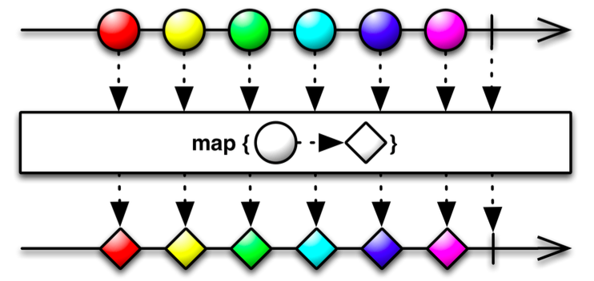
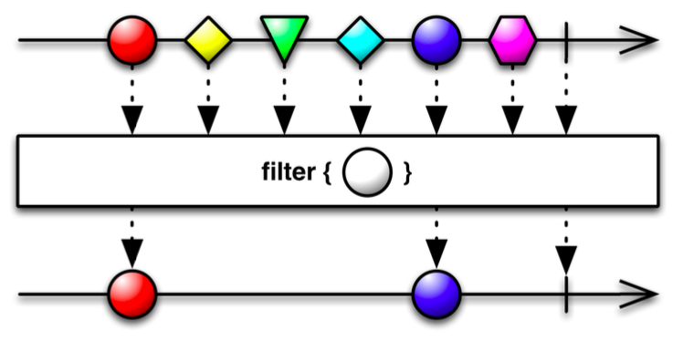
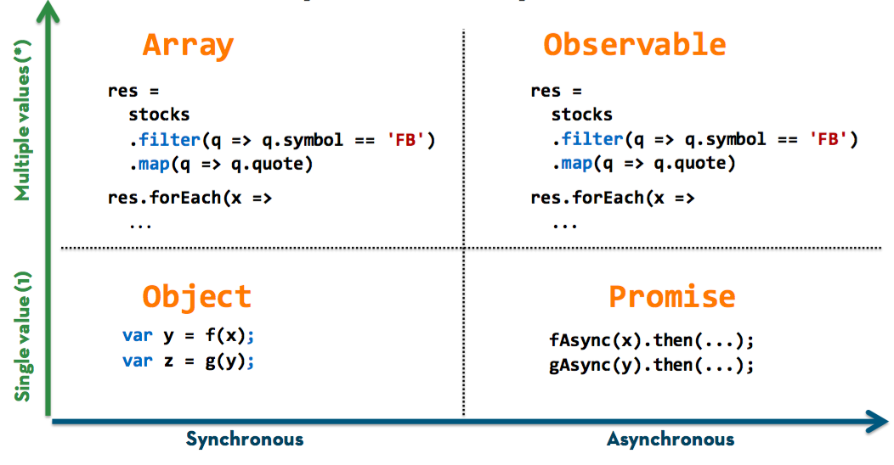

Reactive Programming
@jonalvarezz
I'm a Builder
Focusing in Frontend Development
This talk is about
- Functional Programming
- Reactive Programming
- Featuring some React, and
- Async problems case studies
This is NOT about FRP
I know that feel bru
Async
What do we want?
ASYNCHRONICITY
When do we want it?
THAT’S IRRELEVANT.
— I Am Devloper (@iamdevloper) octubre 21, 2015Async Nightmares
- Memory leaks
- Callback hell
- Race Conditions
- Complex State Machines
- Disjointed Error Handling
Reactive Programming is about collections
Arrays
[2, 4, 6, 19, 23, 10]
Functional Programming
Provides developers with the tools to abstract common collection operations into reusable, composable building blocks
Five functions to rule them all
- map()
- filter()
- reduce()
- concatAll() flatMap()
- zip()
map()
map()
[1, 2, 3, 4, 5, 6].map(function (number) {
return number + 3
});
// [4, 5, 6, 7, 8, 9]
filter()
filter()
[1, 2, 3, 4, 5, 6].filter(function (number) {
return number % 2 === 0
});
// [2, 4, 6]
reduce()
[1, 2, 3, 4, 5, 6].reduce(function (acc, curr) {
return acc + curr
});
// [21]
flatMap()
[ [1], [2, 3], [4, 5, 6]].flatMap();
// [1, 2, 3, 4, 5, 6]
zip()
Array.zip([1, 2, 3], [4, 5, 6], function(left, right) {
return left + right
});
// [5, 7, 9];
Demo
Functional programming & Composition
src/scripts/demos/fp-composition.js
Not bad?
What's difference between an Array...
[{x: 23, y: 30}, {x: 23, y: 40}, {x: 12, y: 90}];
And an Event?
// Mouse Event
{x: 23, y: 30}... {x: 23, y: 40}... {x: 12, y: 90}...
Arrays and Events are both collections
What if Events (streams) could be projected, filtered, concatenated and zipped?
...Like any other Collection
Introducing
Observables
Collection of values in any amount of time
Reactive programming is about Observables
Observables
- Start a data stream
- Emit 0 to N messages
- Teardown the data stream
Data Streams
Can be anything. Arrays, DOM Events, Network request (sockets, Ajax), Animations...
The General Theory of Reactivity

Reactive Extentensions
Rx – RxJS – reactivex.io
Demo
Drag & Drop with RxJS
src/scripts/demos/drag-and-rolo.js
Demo
Wikipedia suggestions – Async problems
src/scripts/demos/suggestions.js